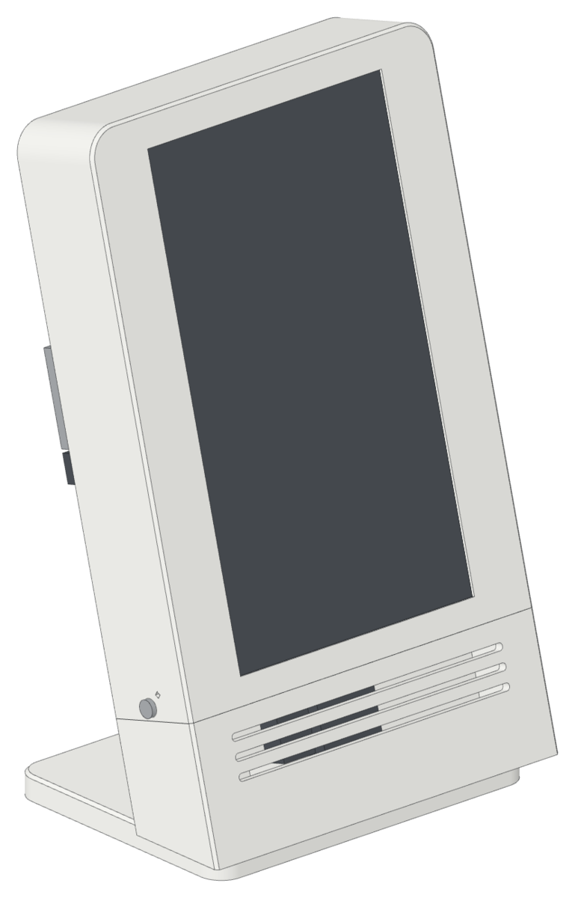
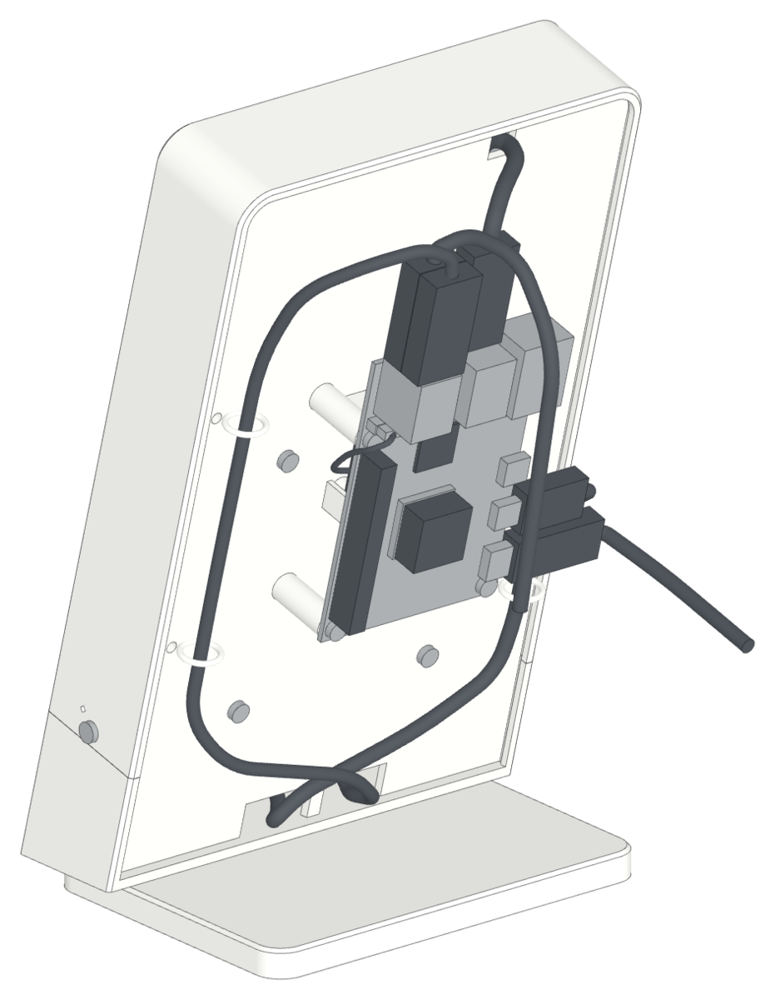
The STL files are in their print orientation. Load them, do not turn them.
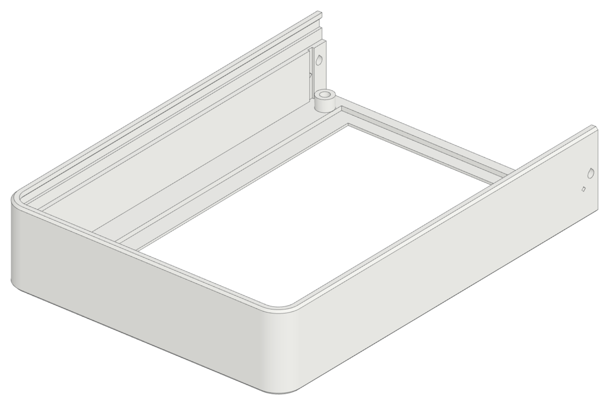
Front face down. The screen opening is in the first layers: use a smooth sheet for a clean face.
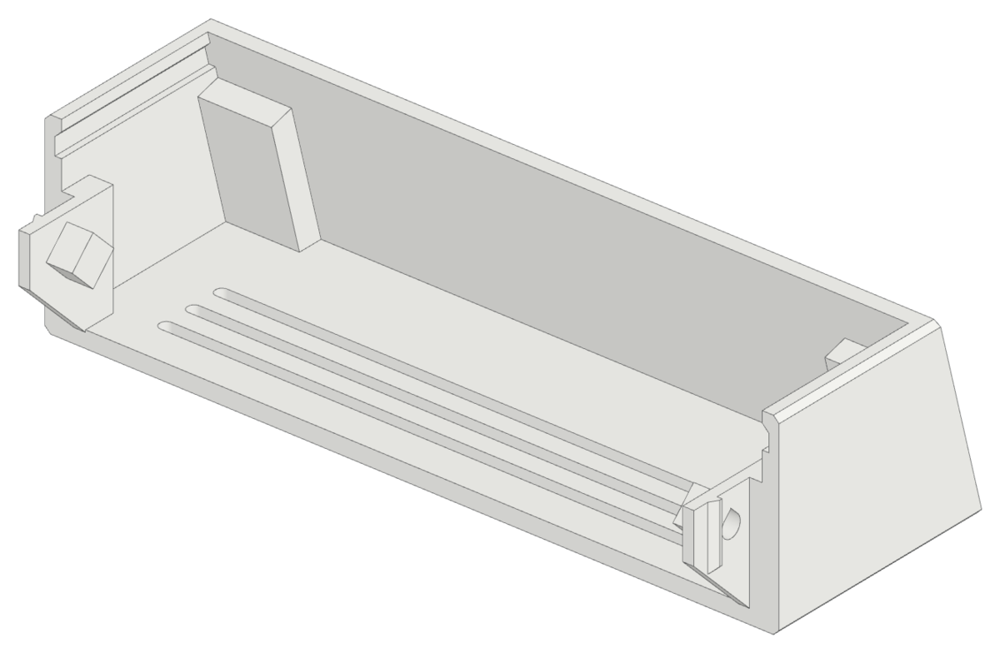
Front face down. The tongues stand up at the two sides.
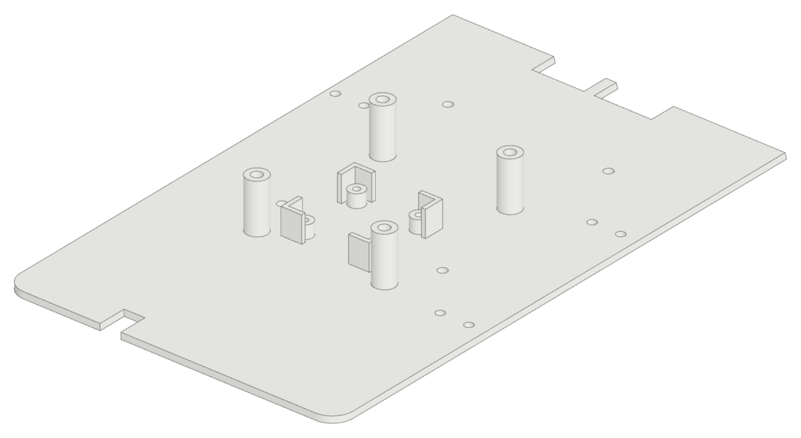
Front face (the drive side) down. The bosses and the fan posts point up.
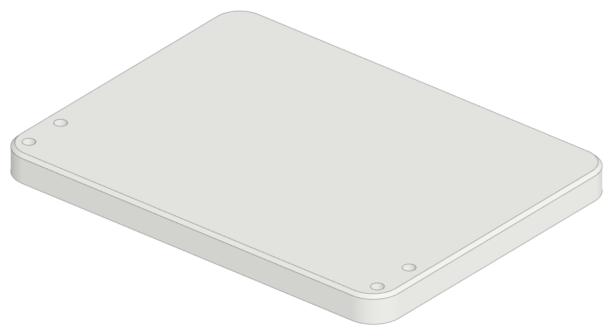
Flat, the screw pockets down.
slab.stlchin.stlback.stlfoot.stl
| Profiles | One Cura profile for each part: run python3 cura/make_profiles.py --install with Cura closed, then pick “Printdeck - Slate …”. |
| Material | PLA, 2.85 mm, 0.5 mm nozzle |
| Slab, chin | 0.3 mm layers, 1.5 mm walls, 1.2 mm top and bottom, 20 % grid infill, skirt |
| Back plate | 0.3 mm layers, 40 % grid infill, skirt |
| Foot | 0.3 mm layers, 20 % grid infill, skirt |
| Supports | Off for all parts. Every pocket, hole, and slot has 45° faces. A slice of each part with supports on (60°, everywhere) adds 0 g of support. |
Parts
Hardware
| 10× | M3 heat-set insert, for a 4.0 mm hole, 4 mm long (display, chin, foot) |
| 4× | M3 heat-set insert, for a 4.0 mm hole, max. 5.5 mm long (Pi) |
| 4× | M3 × 6 screw (display) |
| 4× | M3 × 5 screw (drive) |
| 2× | M3 × 6 socket head screw (chin) |
| 4× | M3 × 8 socket head screw (foot) |
| 4× | M3 × 16 screw, pan head (fan). It cuts its thread in the printed boss. |
| 4× | M3 × 6 screw, pan head (Pi) |
| 3× | Twist tie, 15 cm, max. 3 mm wide (orange looks best) |
Electronics
| 1× | Raspberry Pi 5 |
| 1× | Heatsink for the Pi 5 SoC, max. 16 × 16 × 8 mm, with thermal tape |
| 1× | Adafruit 7 inch HDMI display with touch |
| 1× | 2.5 inch SATA drive with a USB adapter board |
| 1× | 30 mm fan, 10 mm thick, with a Pi 5 fan plug |
| 1× | HDMI ribbon cable kit: HDMI A plug, micro HDMI plug, flat ribbon 40 to 50 cm (the route is 24 cm). A round HDMI cable cannot bend in the 10 mm under the display. |
| 1× | USB-A to micro USB cable, thin (max. 3.5 mm), 50 to 60 cm (the route is 36 cm). Straight plugs, max. 30 mm long. |
| 1× | USB 3 cable for the drive: micro-B SuperSpeed to USB-A, 15 to 20 cm (the route is 11 cm). Straight micro-B plug, max. 22 mm long from the socket. Cable max. 4.5 mm diameter. |
| 1× | Raspberry Pi 27 W USB-C power supply |
Build
Left and right are as seen from the front of the case.
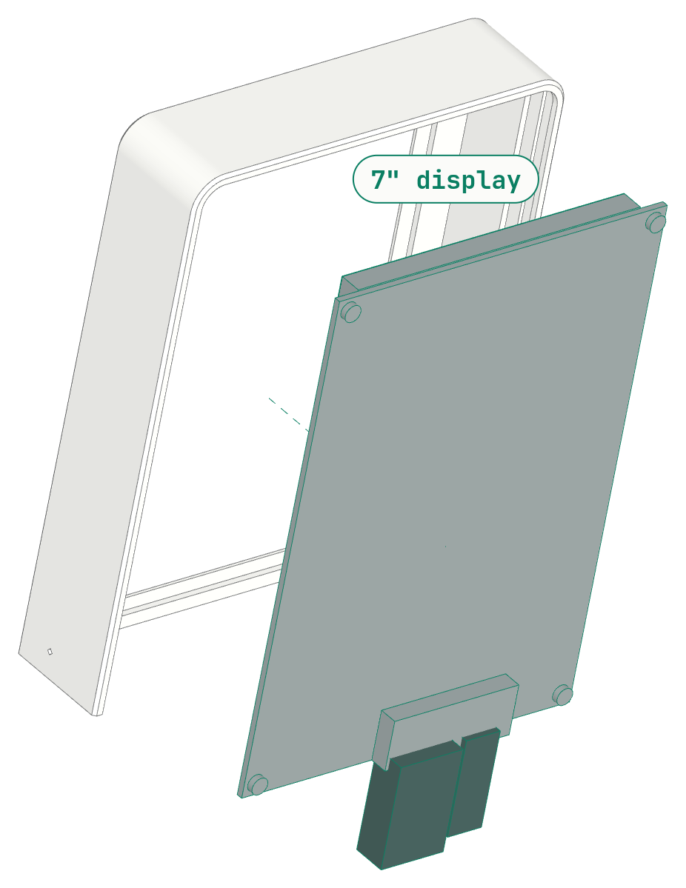
Display
- Press four 4 mm M3 heat-set inserts into the four bosses in the slab. Use a soldering iron at 220 °C. Stop when the insert is flush: the face is only 3.85 mm away.
- Put the slab face down on a soft cloth.
- Connect the HDMI ribbon cable and the USB cable to the display.
- Put the display into the slab: glass to the front, sockets at the bottom. The cables come out of the open bottom of the slab.
- Attach the display with four M3 × 6 screws.
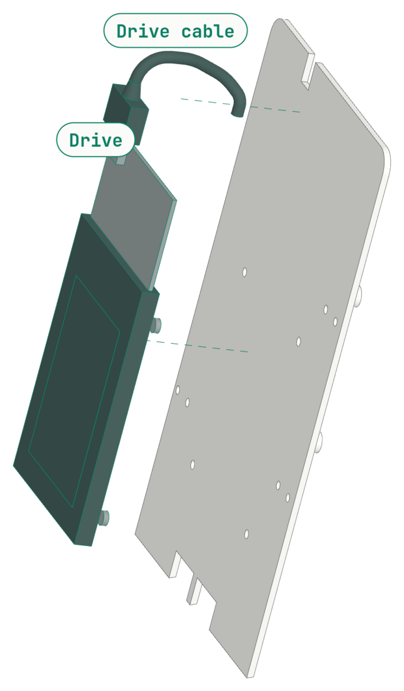
Drive
- Put the drive on the flat front of the back plate: adapter up, the M3 holes against the plate. Attach it with four M3 × 5 screws from the rear.
- Connect the drive cable to the micro-B socket of the drive adapter. Bend the cable to the rear through the notch in the top edge of the plate.
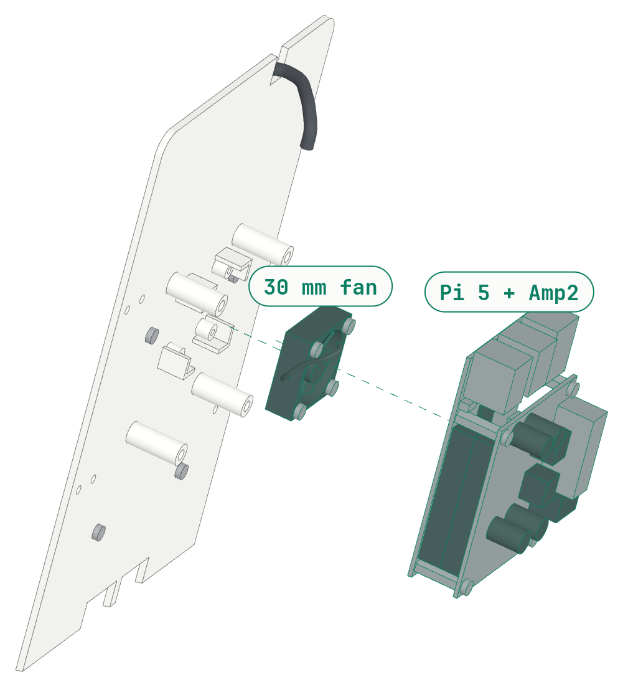
Fan and Pi
- Press four M3 heat-set inserts into the four tall bosses on the rear of the back plate.
- Put the fan in between the four corner guides on the rear, with the cable toward the right of the case. The label side goes away from the plate: the fan blows onto the Pi.
- Attach the fan with four M3 × 16 screws through its corner holes into the four bosses. Turn each screw until the fan touches the boss. Do not tighten more: the thread is in plastic.
- Put the heatsink on the SoC of the Pi.
- Put the Pi on the four bosses: the USB ports up, the USB-C and HDMI ports toward the left of the case. Attach it with four M3 × 6 screws through the Pi into the inserts.
- Lead the fan cable around the right edge of the Pi, above the end of the GPIO header. Connect it to the fan connector of the Pi.
Note. Left and right are as seen from the front of the case.
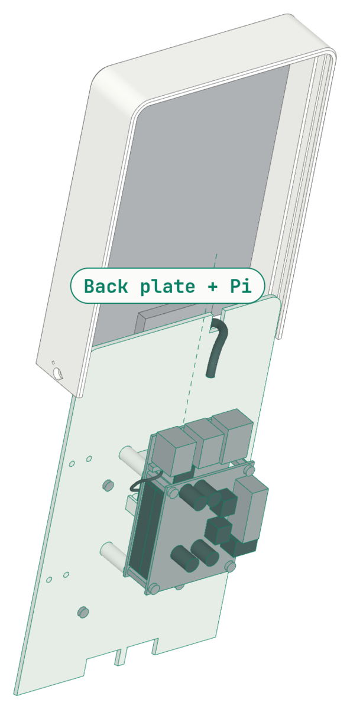
Back plate into the slab
- Keep the slab face down. Lead the two display cables through the two notches in the bottom edge of the back plate: the USB cable at the left, the ribbon at the right.
- Put the edges of the back plate into the grooves of the slab, at the open bottom. Slide the plate up until it stops at the top wall.
Note. The drive is behind the display plugs. If the plate does not slide, look at the plugs first.
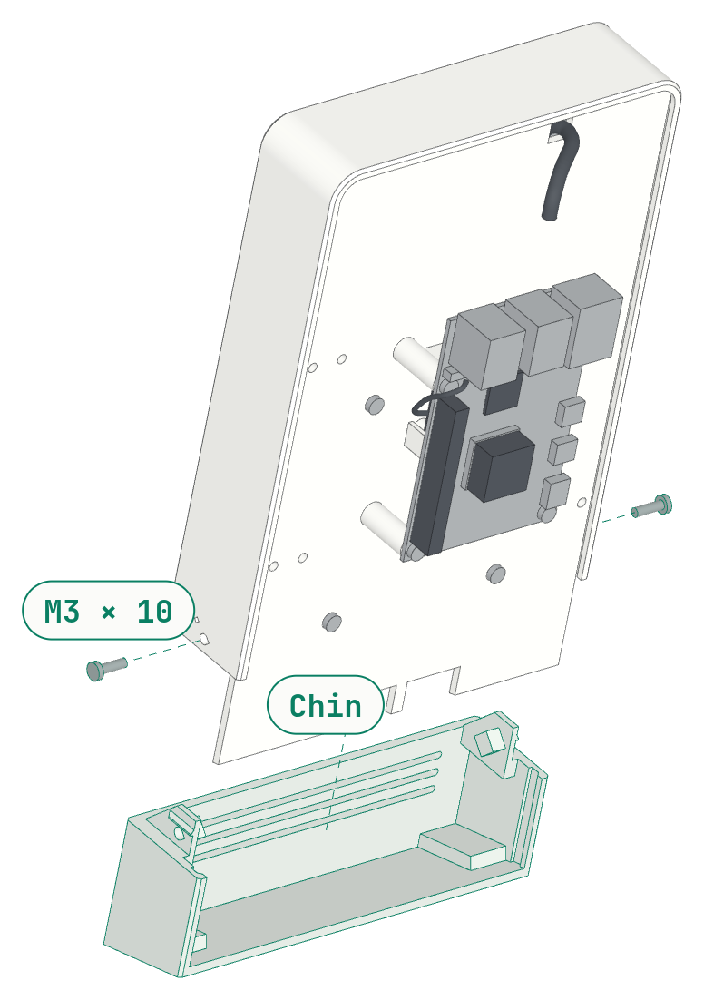
Chin
- Press four 4 mm M3 heat-set inserts into the four holes in the bottom of the chin, at the front corners. Stop when the insert is flush.
- Press one 4 mm M3 heat-set insert into the hole in the outer face of each tongue. Stop when the insert is flush.
- Put the extra length of the display cables into the chin.
- Push the chin up onto the slab: its grooves take the bottom of the back plate. Push until the two tongues click.
- Put an M3 × 6 socket head screw through the hole in each side wall of the slab, into the insert in the tongue. The head goes into the recess and is flush with the wall.
Note. The chin holds the back plate. The case is now closed.
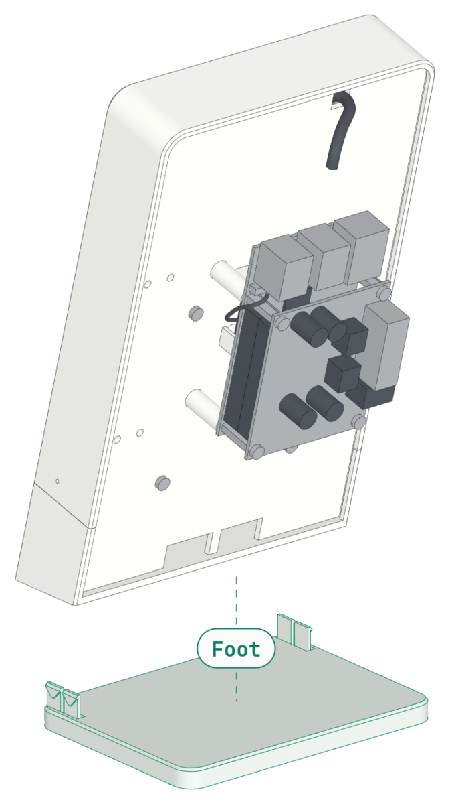
Foot
- Put the case on the foot. The foot is 6 mm in from the front and the sides, and it reaches far to the rear.
- Align the four holes in the foot with the four inserts in the chin.
- Put the four M3 × 8 screws up through the foot, from below. Tighten them until the heads touch the bottom of their pockets. Do not tighten more.
Note. The screw heads are below the bottom face of the foot, so the foot stands flat.
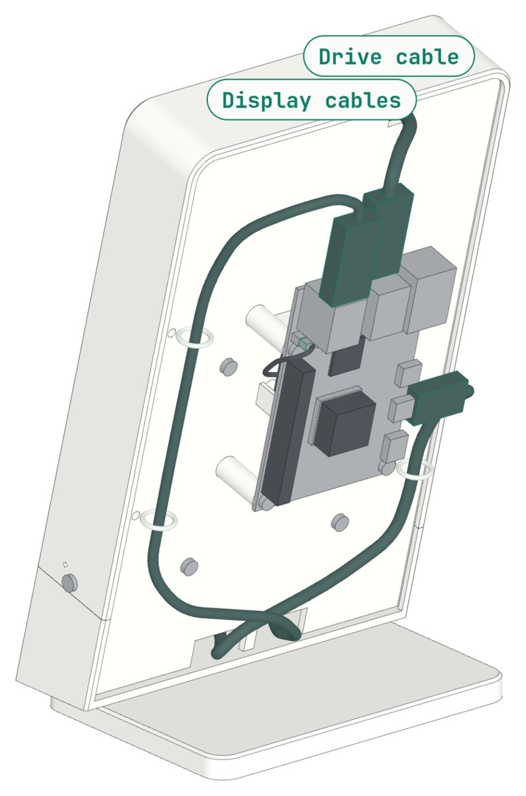
Cables on the rear
- Lead the drive cable over the top of the Pi. Connect it to the blue USB 3 port next to the board, from above.
- Lead the HDMI ribbon to the left, then up the left side of the back plate. Tie it at the pair of holes at the left. Connect it to the micro HDMI port next to the USB-C port.
- Lead the USB cable to the right, then up the right side of the back plate. Tie it at the two pairs of holes at the right. Bend it over the top and connect it to the black USB 2 port away from the board, from above.
- Connect the printer to the black USB 2 port next to the board. The USB ports point up, so you connect them from the top of the case.
- For each tie: put it in through one hole and out through the other, around the cable. Twist it closed on the rear.
Note. No cable shows on the front or the sides. On the rear the cables are part of the look: keep them tight, with no loops.
Connect
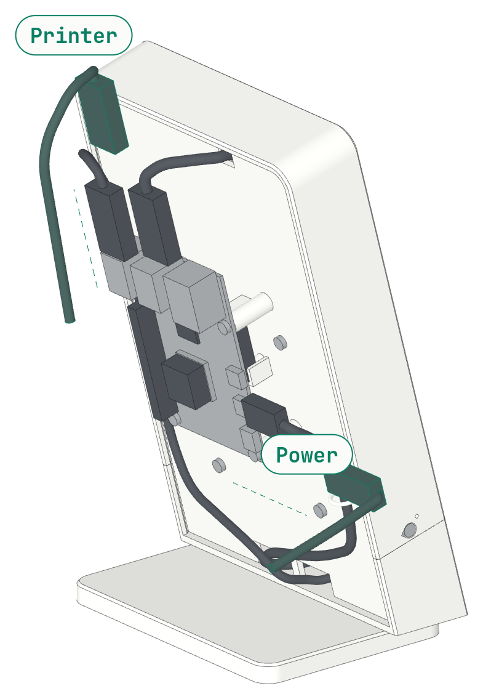
- Connect the USB-C power supply to the Pi. The port is on the left edge of the Pi.
- Connect the 3D printer to the black USB 2 port next to the board, from above.
Software
The Printdeck runs Printdeck OS: one Go program that is the Klipper host, the touch screen, the display of the printer, and the web pages. The touch screen shows a 3D view of the print, the temperatures, and the printer controls. The deck keeps a list of your rolls of filament, and shows the cost of each print.


Download the image from the latest release, and write it to a USB SSD or an SD card with Raspberry Pi Imager. The deck updates itself from the releases. The steps to build the OS are in the os/README.md.
The manual shows each screen: read it on the web or as a PDF. For a display that is mounted wide, read the wide manual or its PDF.
Cura plugin

The Printdeck plugin for Cura shows the deck in a Printdeck tab, live. Click the screen in Cura as you tap the touch screen. Cura follows the roll in the deck, warns when the roll is too short, and shows the layer that prints in the Preview.
The Print on a part tool prints new models on a part that is printed already, for example a logo in another color on a lid. The deck prints a pocket for the part, and checks its height with a paper test.
Download Printdeck.curapackage from the releases, and drag it onto the Cura window.
Cura plugin booklet (PDF) Booklet on the web Download the plugin
On the LulzBot TAZ Workhorse
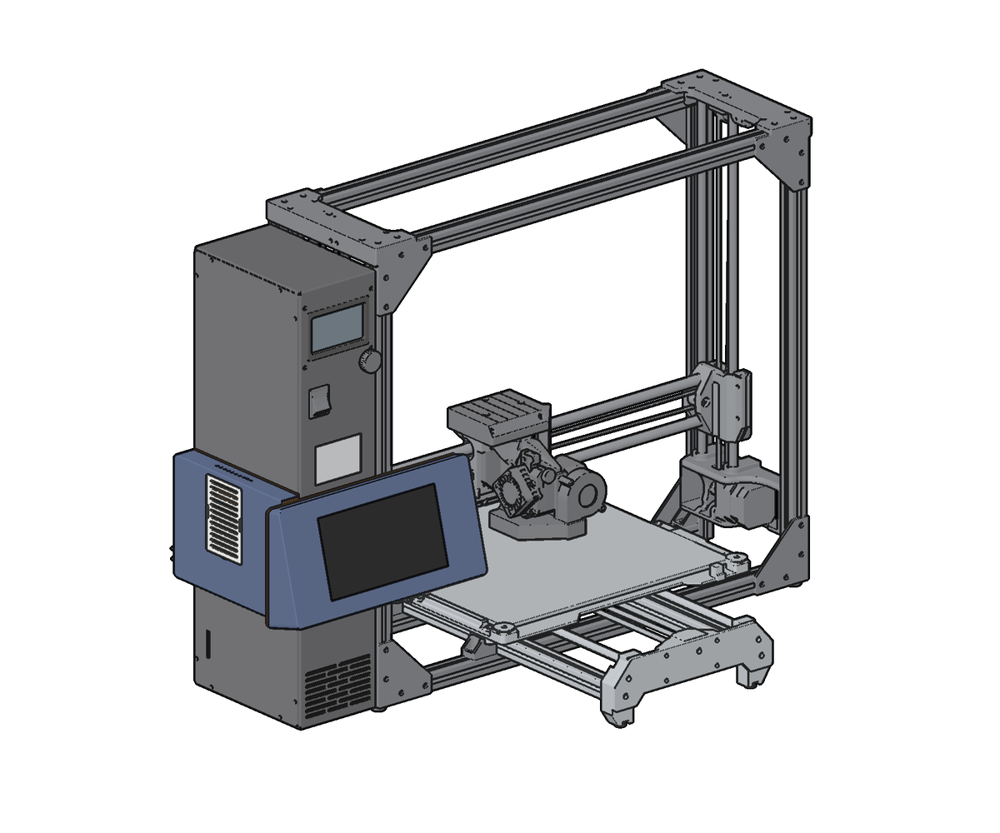
A second mount puts the Printdeck on the front left of a LulzBot TAZ Workhorse, with the display wide. You print its nine parts on the Workhorse itself, and drill no hole in the printer.